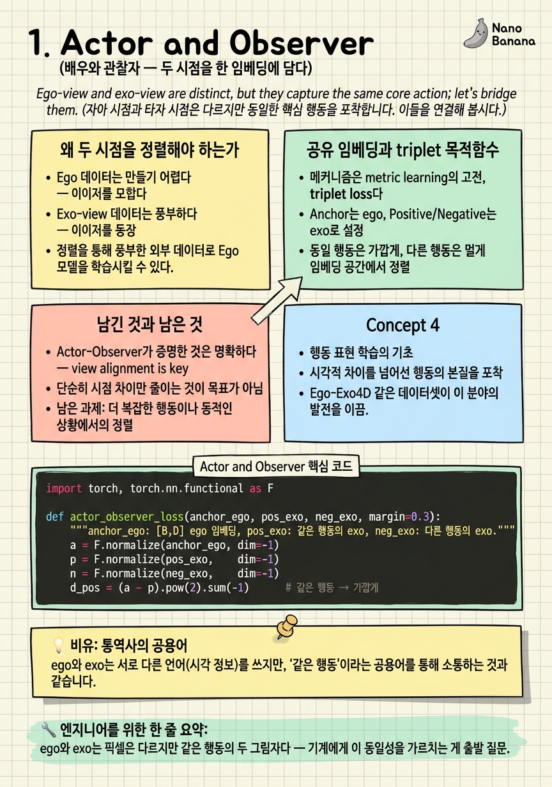

Actor and Observer
당신이 요리하는 모습을, 당신의 눈과 벽에 걸린 CCTV가 동시에 본다. 둘은 완전히 다른 픽셀이지만 같은 사건이다. 기계는 이 둘이 하나임을 어떻게 알까?

🎯 학습 목표
- ego view와 exo view의 근본적 차이(시점·손·화각)를 설명한다
- view-invariant 표현이 왜 전이(transfer)의 전제인지 안다
- triplet 기반 공유 임베딩이 두 시점을 정렬하는 원리를 이해한다
- 약지도(weak supervision)로 정렬을 학습하는 이점과 한계를 구분한다
- 이 논문이 이후 10년 연구의 출발점이 된 이유를 안다
한 사람이 커피를 내리는 장면을 생각하자. 그 사람의 머리에 달린 카메라가 담는 영상(egocentric, ego)과, 맞은편에 놓인 카메라가 담는 영상(exocentric, exo)은 픽셀 수준에서 전혀 닮지 않았다. ego에는 손과 컵이 화면을 가득 채우고 배경은 흔들리며, exo에는 사람 전체가 작게 보이고 배경은 안정적이다.
그런데 이 둘은 같은 행동이다. 사람은 두 영상을 보고 "아, 같은 커피 내리기구나"라고 즉시 안다. 기계에게 이 능력을 주는 것 — 서로 다른 시점의 영상을 같은 개념으로 묶는 것 — 이 ego-exo 연구 전체의 출발 질문이다.
Actor and Observer(CVPR 2018)는 이 질문에 최초로 방법론적 답을 냈다. 핵심 발상은 단순하고 강력하다. ego와 exo를 각각 인코딩하되, 같은 행동에서 온 두 영상은 공유 임베딩 공간에서 가까이, 다른 행동은 멀리 놓이도록 학습한다. 이렇게 정렬된 공간이 생기면, 데이터가 풍부한 exo에서 배운 지식을 데이터가 귀한 ego로 옮길 수 있다. 이 챕터는 그 '공유 임베딩'이라는 씨앗 아이디어를 해부한다.
핵심 내용
왜 두 시점을 정렬해야 하는가
ego 데이터는 만들기 어렵다. 사람이 카메라를 머리에 쓰고 일상을 녹화해야 하니 규모도 작고 다양성도 부족하다. 반면 exo 데이터(유튜브, 영화, CCTV)는 세상에 넘친다. 자연스러운 유혹은 "exo로 학습해서 ego에 쓰자"이지만, 그대로는 안 된다. 두 시점의 도메인 격차(domain gap)가 너무 커서, exo로 학습한 모델은 ego 영상에서 무너진다.
그래서 필요한 것이 view-invariant 표현 — 시점이 바뀌어도 변하지 않는, 행동의 본질을 담은 표현이다. 만약 ego의 '커피 내리기'와 exo의 '커피 내리기'가 임베딩 공간에서 같은 지점에 놓인다면, 그 지점에 붙인 분류기는 시점과 무관하게 작동한다.
이것이 이 분야의 첫 번째 공리다. 시점 정렬(view alignment)은 전이(transfer)의 전제다. 정렬 없이는 exo의 풍요를 ego로 가져올 수 없다. Actor-Observer는 이 정렬을 '공유 임베딩'이라는 가장 직접적인 방법으로 시도한 첫 논문이다.

공유 임베딩과 triplet 목적함수
메커니즘은 metric learning의 고전, triplet loss다. 세 개의 클립을 뽑는다 — 기준(anchor)이 되는 ego 클립, 같은 행동의 exo 클립(positive), 다른 행동의 exo 클립(negative). 그리고 임베딩 공간에서 anchor–positive 거리는 줄이고 anchor–negative 거리는 늘린다.
\[\mathcal{L} = \max\big(0,\; \|f(a)-f(p)\|^2 - \|f(a)-f(n)\|^2 + \alpha\big)\]
여기서 \(f\)는 ego와 exo를 같은 공간으로 보내는 인코더(ActorObserverNet), \(\alpha\)는 마진이다. 이 손실을 최소화하면, 네트워크는 '시점'이라는 표면적 차이를 무시하고 '행동'이라는 공통 신호에 반응하도록 스스로 조직된다.
주목할 점은 약지도(weak supervision)다. 프레임 단위의 정밀한 시간 정렬 라벨이 없어도, "이 ego와 이 exo가 같은 행동"이라는 느슨한 짝 정보(Charades-Ego의 약한 페어)만으로 학습한다. 정밀한 감독 없이도 정렬이 창발한다는 이 발견이, 이후 'unpaired' 계열(3~5장)로 가는 문을 연다.

남긴 것과 남은 것
Actor-Observer가 증명한 것은 명확하다. 서로 다른 시점의 영상을 하나의 임베딩으로 묶는 것이 가능하며, 그 정렬만으로 exo→ego 전이가 작동한다. 이것은 개념 증명(proof of concept)으로서 결정적이었다.
하지만 남긴 숙제도 크다. 첫째, 정렬이 feature 수준에 머문다 — "같은 행동이다"까지는 알아도, exo의 어느 픽셀이 ego의 어느 픽셀에 대응하는지(공간 대응)는 모른다. 둘째, 짝 데이터에 의존한다. Charades-Ego처럼 같은 배우가 같은 행동을 두 시점으로 연기한 데이터가 필요하다. 셋째, triplet이라는 얕은 목적함수는 미세한 행동 차이를 구분하기엔 거칠다.
이 세 한계가 각각 이후 연구의 방향이 된다. 공간 대응은 6~8장(correspondence), 짝 데이터 탈출은 3~5장(unpaired), 미세 행동은 3장 AE2의 object-centric 인코더가 공략한다. Actor-Observer는 답이 아니라 올바른 질문을 남긴 논문이다.
💡 비유로 이해하기
한국어만 아는 사람과 아랍어만 아는 사람이 있다. 둘을 직접 연결할 수는 없다(도메인 격차). 하지만 둘 다 영어라는 공용어로 번역하면, 영어 공간에서 "사과"는 한 지점에 모인다. 이제 한국어로 배운 지식을 영어를 거쳐 아랍어로 옮길 수 있다.
공유 임베딩이 바로 이 영어다. ego와 exo라는 두 '언어'를 같은 의미 공간으로 번역하면, 그 공간에서 '커피 내리기'는 시점과 무관하게 한 곳에 모인다. triplet loss는 "같은 뜻은 가까이, 다른 뜻은 멀리"라고 통역사를 훈련시키는 채점표다.
단, 이 초기 통역사는 단어장 수준이다. "같은 주제"까지는 통역해도 "3번째 문장의 이 단어가 저 단어에 대응한다"는 세밀한 정렬은 못 한다 — 그게 뒤 챕터들이 키우는 능력이다.
💻 코드 예시
triplet 기반 공유 임베딩의 핵심을 최소 구현으로 보자. ego/exo를 같은 인코더로 보내 정렬 손실을 계산한다.
import torch, torch.nn.functional as F
def actor_observer_loss(anchor_ego, pos_exo, neg_exo, margin=0.3):
"""anchor_ego: [B,D] ego 임베딩, pos_exo: 같은 행동의 exo, neg_exo: 다른 행동의 exo."""
a = F.normalize(anchor_ego, dim=-1)
p = F.normalize(pos_exo, dim=-1)
n = F.normalize(neg_exo, dim=-1)
d_pos = (a - p).pow(2).sum(-1) # 같은 행동 → 가깝게
d_neg = (a - n).pow(2).sum(-1) # 다른 행동 → 멀게
return F.relu(d_pos - d_neg + margin).mean()
# 정렬이 되면: 같은 행동의 ego/exo 코사인 유사도 > 다른 행동
ego = torch.randn(4, 128)
exo_same = ego + 0.1*torch.randn(4,128) # 같은 행동(약한 짝)
exo_diff = torch.randn(4, 128) # 다른 행동
print("loss:", actor_observer_loss(ego, exo_same, exo_diff).item())핵심은 d_pos - d_neg + margin을 relu로 자른 것 — 같은 행동 쌍이 다른 행동 쌍보다 마진 이상 가까워지면 손실이 0이 된다. ego와 exo가 같은 인코더(또는 공유 공간으로 보내는 두 인코더)를 통과한다는 점이 핵심이다. 이 손실만으로 네트워크는 시점 차이를 무시하고 행동 정체성에 반응하게 된다. 라벨은 '같은 행동인가'라는 약한 신호뿐이다.
🏭 현업에서의 평가
✅ 시니어가 보는 것
- 도메인 격차와 view-invariance의 관계를 전이 관점에서 설명하는가
- triplet/contrastive 정렬의 목적함수를 정확히 쓰는가
- 약지도로 정렬이 창발하는 원리와 한계를 아는가
⚠️ 레드 플래그
- exo 데이터를 그냥 ego 모델에 넣으면 된다고 생각(도메인 격차 무시)
- feature 정렬과 공간(픽셀) 대응을 혼동
- triplet negative 샘플링의 중요성을 모름
🎤 예상 인터뷰 질문 (클릭하면 모범답안)
exo 데이터가 풍부한데 왜 ego 태스크에 바로 못 쓰는가? 무엇이 필요한가?
도메인 격차 때문이다. 시점·화각·손 가시성·모션이 완전히 달라 exo로 학습한 표현은 ego 분포에서 무너진다. 필요한 것은 view-invariant 표현 — 두 시점을 같은 임베딩 공간으로 정렬해, 그 공간 위의 분류기가 시점과 무관하게 작동하도록 하는 것. Actor-Observer는 이를 공유 임베딩 + triplet으로 처음 구현했다.
triplet loss에서 anchor를 ego로, positive/negative를 exo로 두는 이유는?
전이 방향이 exo→ego이므로, ego 앵커를 기준으로 exo를 끌어당겨 ego 관점에서 exo가 정렬되게 만든다. positive는 같은 행동의 exo, negative는 다른 행동의 exo. 이렇게 하면 임베딩 공간이 ego 질의에 대해 exo를 검색·전이할 수 있는 구조가 된다. negative 샘플링이 거칠면 미세 행동 구분이 안 되는 게 한계.
이 방법이 '커피 내리기'는 정렬해도 못 하는 것은 무엇인가?
공간 대응이다. feature 수준에서 '같은 행동'까지는 알아도 exo의 컵과 ego의 컵이 픽셀·객체 수준에서 어디에 대응하는지는 모른다. 로보틱스·AR은 이 객체 수준 대응이 필요해서, 6~8장의 correspondence 연구(ObjectRelator·O-MaMa·CCMP)가 이 빈틈을 공략한다.
✨ 핵심 요약
두 시점 = 한 사건
ego와 exo는 픽셀은 다르지만 같은 행동의 두 그림자다 — 기계에게 이 동일성을 가르치는 게 출발 질문.
정렬은 전이의 전제
view-invariant 표현 없이는 exo의 풍요를 ego로 옮길 수 없다.
공유 임베딩
ego·exo를 같은 공간으로 보내 같은 행동은 가깝게, 다른 행동은 멀게 정렬한다.
triplet 목적함수
anchor(ego)–positive(같은 exo)–negative(다른 exo)로 시점을 무시하고 행동에 반응하게 만든다.
약지도의 힘
프레임 정렬 라벨 없이 '같은 행동' 약한 짝만으로 정렬이 창발한다 — unpaired 계열의 씨앗.
feature 정렬의 한계
'같은 행동'은 알아도 픽셀·객체 대응은 모른다 — correspondence 연구의 출발점.
올바른 질문
Actor-Observer는 완성된 답이 아니라 이후 10년의 방향(unpaired·대응·생성)을 정의한 질문이다.
- Sigurdsson et al. (2018). Actor and Observer: Joint Modeling of First and Third-Person Videos. CVPR 2018. arXiv:1804.09627